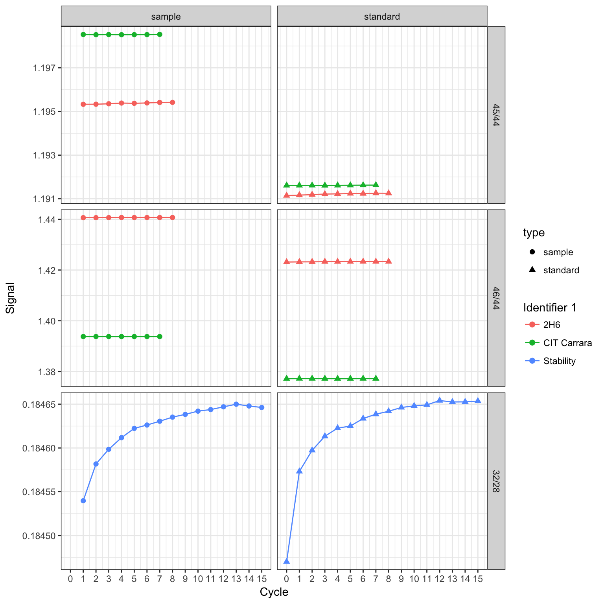

Dual Inlet Examples
Source:vignettes/dual_inlet.Rmd
Introduction
Isoreader supports several dual inlet IRMS data formats as well as plotting functions specifically for dual inlet data. This vignette shows some of the functionality for dual inlet data files. For additional information on operations more generally (caching, combining read files, data export, etc.), please consult the operations vignette.
Note: this vignette is still a work in progress.
# load isoreader package
library(isoreader)Reading files
Reading dual inlet files is as simple as passing one or multiple file or folder paths to the iso_read_dual_inlet() function. If folders are provided, any files that have a recognized continuous flow file extensions within those folders will be processed (e.g. all .did and .caf). Here we read several files that are bundled with the package as examples (and whose paths can be retrieved using the iso_get_reader_example() function).
# all available examples
iso_get_reader_examples() %>% rmarkdown::paged_table()# read dual inlet examples
iso_files <-
iso_read_dual_inlet(
iso_get_reader_example("dual_inlet_example.did"),
iso_get_reader_example("dual_inlet_example2.did"),
iso_get_reader_example("dual_inlet_example.caf")
)
#> Info: preparing to read 3 data file(s)...
#> Info: reading and caching file 1/3 '/Library/Frameworks/R.framework/Versions/3.4/Resources/library/isoreader/extdata/dual_inlet_example.did' with '.did' reader...
#> Info: reading and caching file 2/3 '/Library/Frameworks/R.framework/Versions/3.4/Resources/library/isoreader/extdata/dual_inlet_example2.did' with '.did' reader...
#> Info: reading and caching file 3/3 '/Library/Frameworks/R.framework/Versions/3.4/Resources/library/isoreader/extdata/dual_inlet_example.caf' with '.caf' reader...File summary
The iso_files variable now contains a set of isoreader objects, one for each file. Take a look at what information was retrieved from the files using the iso_get_data_summary() function.
iso_files %>% iso_get_data_summary() %>% rmarkdown::paged_table()
#> Info: aggregating data summary from 3 data file(s)Problems
In case there was any trouble with reading any of the files, the following functions provide an overview summary as well as details of all errors and warnings, respectively. The examples here contain no errors but if you run into any unexpected file read problems, please file a bug report in the isoreader issue tracker.
iso_files %>% iso_get_problems_summary() %>% rmarkdown::paged_table()iso_files %>% iso_get_problems() %>% rmarkdown::paged_table()File Information
Detailed file information can be aggregated for all isofiles using the iso_get_file_info() function which supports the full select syntax of the dplyr package to specify which fields are of interest (by default, all file information is retrieved). The following provides a few examples for how this can be used (the names of the interesting info columns may vary between different file formats):
# all file information
iso_files %>% iso_get_file_info() %>% rmarkdown::paged_table()
#> Info: aggregating file info from 3 data file(s)# select file information
iso_files %>%
iso_get_file_info(
select = c(
# select the Analysis column (keep the name)
Analysis,
# select the time stamp and rename it to `Date & Time`
`Date & Time` = file_datetime,
# select all columns that start with "Id" and rename them id1, id2, etc.
id = starts_with("Id")
)
) %>% rmarkdown::paged_table()
#> Info: aggregating file info from 3 data file(s)Resistors
Additionally, some IRMS data files contain resistor information that are useful for downstream calculations (see e.g. section on signal conversion later in this vignette):
iso_files %>% iso_get_resistors_info() %>% rmarkdown::paged_table()
#> Info: aggregating resistors info from 3 data file(s)Reference values
As well as isotopic reference values for the different gases:
# reference delta values without ratio values
iso_files %>% iso_get_standards_info() %>% rmarkdown::paged_table()
#> Info: aggregating standards info from 3 data file(s)# reference values with ratios
iso_files %>% iso_get_standards_info(with_ratios = TRUE) %>% rmarkdown::paged_table()
#> Info: aggregating standards info from 3 data file(s)Data & Plots
The raw data read from the IRMS files can be retrieved similarly using the iso_get_raw_data() function. Most data aggregation functions also allow for inclusion of file information using the include_file_info parameter, which functions identically to the select parameter of the iso_get_file_info function discussed earlier.
# get raw data with default selections (all raw data, no additional file info)
iso_files %>% iso_get_raw_data() %>% head(n=10) %>% rmarkdown::paged_table()
#> Info: aggregating raw data from 3 data file(s)# get specific raw data and add some file information
iso_files %>%
iso_get_raw_data(
# select just time and the m/z 2 and 3 ions
select = c(type, cycle, v28.mV, v30.mV),
# include the Analysis number fron the file info and rename it to 'run'
include_file_info = c(run = Analysis)
) %>%
# look at first few records only
head(n=10) %>% rmarkdown::paged_table()
#> Info: aggregating raw data from 3 data file(s), selecting data columns 'c(type, cycle, v28.mV, v30.mV)', including file info 'c(run = Analysis)'
#> Warning: 'select = c(type, cycle, v28.mV, v30.mV)' refers to unknown column(s) in data frame 'data':
#> - object 'v30.mV' not foundPlots
Plotting the raw data can be done either with the generic iso_plot_raw_data() function for a simple plot with default parameters, or directly using the dual inlet specific iso_plot_dual_inlet_data():
iso_files %>% iso_plot_dual_inlet_data()
All customization options are described in the function help (?iso_plot_dual_inlet_data) and include, for example, plotting only a specific subset of masses:
iso_files %>%
# plot just masses 2, 44 and 45
iso_plot_dual_inlet_data(
data = c("28", "44", "45")
)
Isotope ratios
For dual inlet applications isotope ratios calculated using the recorded ion intensities are typically of primary interest. For this purpose, isoreader provides a dynamic ratio calculation function (iso_calculate_ratios()) that accepts any combination of masses, here demonstrated for several different ratios. In this context, another useful customization option of the plotting function is the option to adjust plot aesthetics such as color, shape, and paneling:
iso_files <-
iso_files %>%
# calculate 46/44, 45/44 and 32/28 (O2/N2) ratios
iso_calculate_ratios(ratios = c("46/44", "45/44", "32/28"))
#> Info: calculating ratio(s) in 3 data file(s): 46/44, 45/44, 32/28
iso_files %>%
iso_plot_dual_inlet_data(
# visualize ratios
data = c("45/44", "46/44", "32/28"),
# panel the ratios vs. type (standard/sample)
panel = data ~ type,
# color by the file info stored in Identifier 1
color = `Identifier 1`
)
Signal conversion
Isoreader can convert between different signal units. This is particularly useful for comparing data files from different mass specs that record primary signals differentally. In dual inlet applications, this is typically less important than in continuous flow because data is usually visualized as ratios right away. However, occassionally it can be of interest to examine the primary ion currents.
iso_files$dual_inlet_example.caf %>%
# convert all signals to nano ampere
iso_convert_signals(to = "pA") %>%
# plot primary ion currents
iso_plot_dual_inlet_data(
data = c("45", "47", "48"),
color = type
)
#> Info: converting signals to 'pA' for 1 continuous flow data file(s) with automatic resistor values from individual iso_files
Plot styling
Since all isoreader plots are standard ggplot objects, they can be modified with any ggplot commands. For example to add a horizontal line (using dplyr for the calculations) and modify the themes:
library(ggplot2)
library(dplyr)
iso_files %>%
# replot
iso_plot_dual_inlet_data(
data = "45/44",
panel = type ~ `Identifier 1`,
color = `Identifier 1`
) +
# add horizontal line indicating the averages (using a ggplot geom)
geom_hline(
data = function(df) {
df %>%
group_by(`Identifier 1`, type, data) %>%
summarize(value = mean(value))
},
mapping = aes(yintercept = value)) +
# modify plot styling (ggplot functionality)
theme(text = element_text(size = 20))
Data Processing
The isoreader package is intended to make raw stable isotope data easily accessible. However, as with most analytical data, there is significant downstream processing required to turn these raw signal intensities into properly referenced isotopic measurement. This and similar functionality will be part of the isoprocessor package which takes isotopic data through the various corrections in a transparent, efficient and reproducible manner.
That said, most vendor software also performs some of these calculations and it can be useful to be able to compare new data reduction procecures against those implemented in the vendor software. For this purpose, isoreader retrieves vendor computed data tables whenver possible, as illustrated below.
Vendor Data Table
As with most data retrieval funtions, the iso_get_vendor_data_table() function also allows specific column selection (by default, all columns are selected) and easy addition of file information via the include_file_info parameter (by default, none is included).
# entire vendor data table
iso_files %>% iso_get_vendor_data_table() %>% rmarkdown::paged_table()
#> Info: aggregating vendor data table without units from 3 data file(s)# get specific parts and add some file information
iso_files %>%
iso_get_vendor_data_table(
# select cycle and all carbon columns
select = c(cycle, matches("C")),
# include the Identifier 1 fron the file info and rename it to 'id'
include_file_info = c(id = `Identifier 1`)
) %>% rmarkdown::paged_table()
#> Info: aggregating vendor data table without units from 3 data file(s), including file info 'c(id = `Identifier 1`)'For expert users: retrieving all data
For users familiar with the nested data frames from the tidyverse (particularly tidyr’s nest and unnest), there is an easy way to retrieve all data from the iso file objects in a single nested data frame. Use the include_file_info, include_raw_data, and include_vendor_data_table parameters to specify which columns to include. By default, everything is included:
all_data <- iso_files %>% iso_get_data()
#> Info: aggregating all data from 3 data file(s)
all_data %>% rmarkdown::paged_table()Data Export
At the moment, isoreader supports export of all data to R Data archives, Excel, and the Feather file format (a Python/R cross-over format). R Data archives can also be convientiently read back using the same iso_read_dual_inlet command used for raw data files. Note that the different export methods have similar syntax and append the appropriate file extension for each type of export file.
# export to R data archive
iso_files %>% iso_export_to_rda("iso_files_export")
#> Info: exporting data from 3 iso_files into R Data Archive 'iso_files_export.di.rda'
# read back the exported R data archive
iso_read_dual_inlet("iso_files_export.di.rda")
#> Info: preparing to read 1 data file(s)...
#> Info: reading file 1/1 'iso_files_export.di.rda' with '.rda' reader...
#> Info: loaded data for 3 data files from R Data Archive - checking loaded files for content consistency...
#> Data from 3 dual inlet iso files:
#> # A tibble: 3 x 6
#> file_id raw_data file_info method_info vendor_data_tab… file_path
#> <chr> <chr> <chr> <chr> <chr> <chr>
#> 1 dual_in… 15 cycles… 15 entri… standards,… 15 rows, 7 colu… /Library/Fra…
#> 2 dual_in… 7 cycles,… 14 entri… standards,… 7 rows, 8 colum… /Library/Fra…
#> 3 dual_in… 8 cycles,… 20 entri… standards,… 8 rows, 9 colum… /Library/Fra…# export to excel
iso_files %>% iso_export_to_excel("iso_files_export")
#> Info: exporting data from 3 iso_files into Excel 'iso_files_export.di.xlsx'
# data sheets available in the exported data file:
readxl::excel_sheets("iso_files_export.di.xlsx")
#> [1] "raw data" "file info" "method info"
#> [4] "vendor data table" "problems"# export to feather
iso_files %>% iso_export_to_feather("iso_files_export")
#> Info: exporting data from 3 iso_files into .di.feather files at 'iso_files_export'
# exported feather files
list.files(pattern = ".di.feather")
#> [1] "iso_files_export_file_info.di.feather"
#> [2] "iso_files_export_method_info-resistors.di.feather"
#> [3] "iso_files_export_method_info-standards.di.feather"
#> [4] "iso_files_export_problems.di.feather"
#> [5] "iso_files_export_raw_data.di.feather"
#> [6] "iso_files_export_vendor_data_table.di.feather"